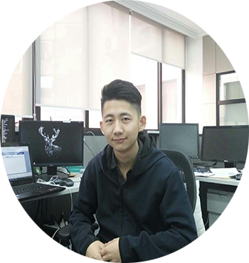

助教信息
|  | ||||
| 刘天良 博三 zero shot learning & image caption | 朱梦娇 研三 高效可配置的卷积神经网络计算架构设计（硬件方向）Email:xjtuzmj@hotmail.com | 樊珑 研二 可配置的卷积神经网络在FPGA平台上的实现（硬件方向）Email:fanlongxjtu@hotmail.com | 魏亚东 研二 神经网络优化，metalearning等 Email:yadong.stu.xjtu@outlook.com | 赵之旭 研二 神经网络算法加速与系统实现 Email:zhixu001@gmail.com |